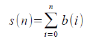

Rudin-Shapiro sequence
Problem 384
Define the sequence a(n) as the number of adjacent pairs of ones in the binary expansion of n (possibly overlapping).
E.g.: a(5) = a(1012) = 0, a(6) = a(1102) = 1, a(7) = a(1112) = 2
Define the sequence b(n) = (-1)a(n).
This sequence is called the Rudin-Shapiro sequence.
Also consider the summatory sequence of b(n): .
The first couple of values of these sequences are:
n   0   1   2   3   4   5   6   7
a(n)   0   0   0   1   0   0   1   2
b(n)   1   1   1   -1   1   1   -1   1
s(n)   1   2   3   2   3   4   3   4
The sequence s(n) has the remarkable property that all elements are positive and every positive integer k occurs exactly k times.
Define g(t,c), with 1 ≤ c ≤ t, as the index in s(n) for which t occurs for the c'th time in s(n).
E.g.: g(3,3) = 6, g(4,2) = 7 and g(54321,12345) = 1220847710.
Let F(n) be the fibonacci sequence defined by:
F(0)=F(1)=1 and
F(n)=F(n-1)+F(n-2) for n>1.
Define GF(t)=g(F(t),F(t-1)).
Find ΣGF(t) for 2≤t≤45.